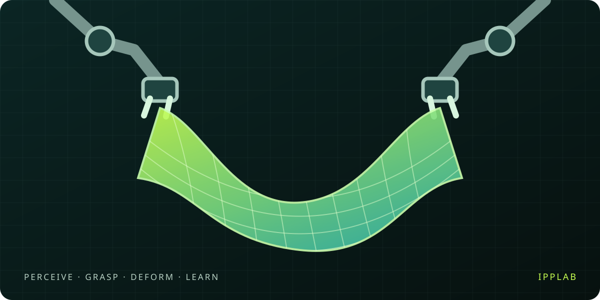

01
ENVIRONMENTS
Simulation environments and platforms
Explore leading multiphysics simulation tools such as SAPIEN, Genesis, Isaac Sim, MuJoCo and more.
A project by IPPLAB · Deformable Manipulation
A curated map of deformable simulation and manipulation for embodied AI: perception, control, policy learning, sim-to-real transfer, and asset generation for cloth, rope, and soft bodies.

DEFORM · SIMULATE · LEARN
01 / OVERVIEW
Flexible objects have no fixed shape, but exist in every real scene that robots need to face.
Explore papers, tools, datasets, and benchmarks across perception, simulation, manipulation, and transfer.
02 / RESEARCH MAP
Explore deformable simulation and manipulation, from numerical solvers to real-world deployment.
ENVIRONMENTS
Explore leading multiphysics simulation tools such as SAPIEN, Genesis, Isaac Sim, MuJoCo and more.
MANIPULATION
Task, data and policy learning for folding, hanging, grabbing and moving operations.
MANIPULATION METHODS
From grasp point perception, visual and tactile feedback to general garment manipulation and strategy learning.
SIM-TO-REAL
Narrow the gap between dynamics and visual domains, allowing simulation training to truly reach the real world.
BENCHMARKS
Use standard environments and unified indicators to reliably compare the learning efficiency and generalization ability of algorithms.
3D GENERATION
Reconstruct simulatable, physically-property 3D flexible assets from images or videos.
FOUNDATIONS
PBD, finite elements and differentiable physics: understanding the computational methods behind the motion of deformable bodies.
SURVEYS
Establish one map of the field of deformable objects and cloth manipulation, and sort out the methodological context and open issues.
03 / HIGHLIGHTS
04 / OPEN COLLABORATION
Found a paper, tool, or dataset worth including? Feel free to submit Pull Requests to keep this list growing.